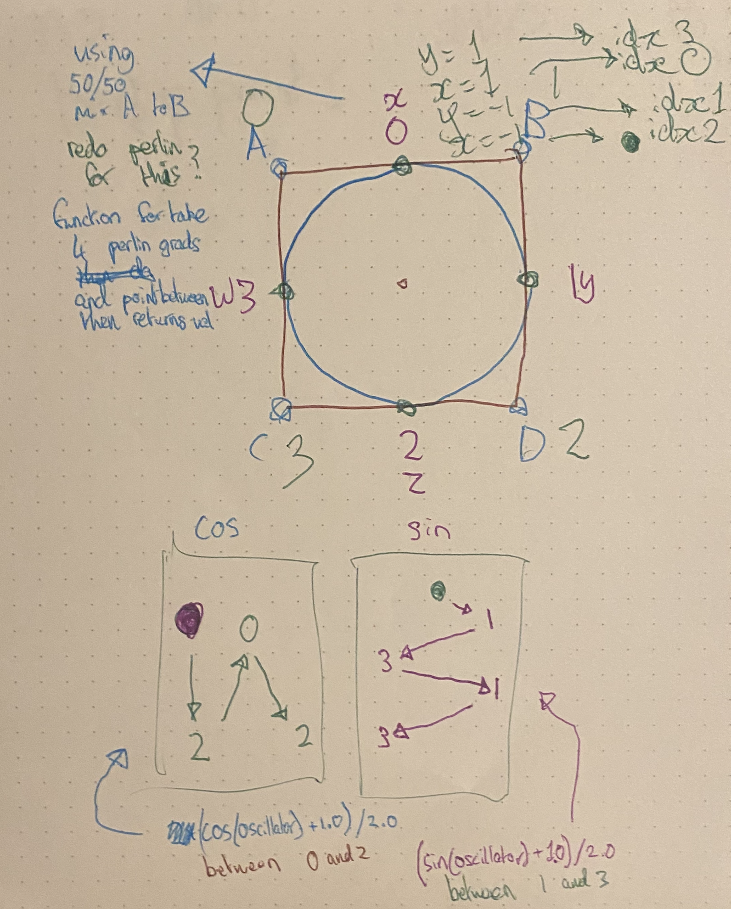
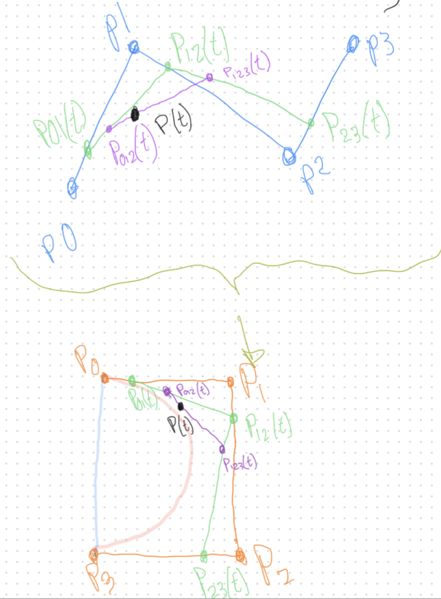
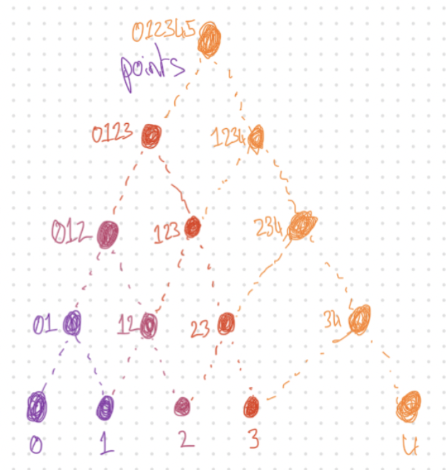
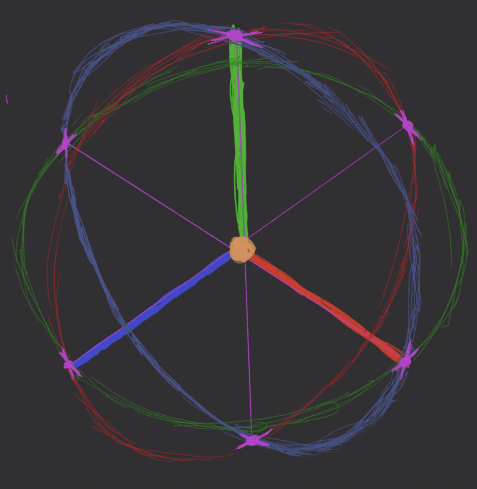

![[...]](/img/bookicon.png)
[07/11/2024] :: Thundering Thicket Thursdays
Thundering Thicket Thursdays
noisy canopys
-
Worleynoise- using multiple layers (octaves) of
worleynoise we can acheive a rough shape to the tree canopy - then adding them together, gives us a rough idea of what the leaves density should be
- we can then use either
perlinnoise or more layers ofworleynoise to create natural looking leaf density
- using multiple layers (octaves) of
-
stages of the pipeline (naive approach)
CPU space-Scene:: should be in charge of the core structure of the tree, which should have small changes to create large differences in effectGPU space-Vertex shader:: minimal viable product says that this does virtually nothingGPU space-Fragment shader:: in charge of the core of our algorithm, to determine colouring by location
-
notes on time complexity and improvements
- in practice, it's best to use a hashing algorithm to determine seed locations of the cells, so that we wont have excessive lookup times
- another alternative is to utilise the vertex shader and using vertex attributes we can provide information about where the nearby points are via a
Matrix3f/mat3 - vertex shader to handle this may result in more computation than necessary as we'll need to generate the shape first, but per fragment operations may end up being minimised
-
using multiple passes/buffers, and render textures, we could have it being
- there's
nlots of theworleynoise being generated with different cell frequencies - for the
n, we haveworleynoise, andvoronoinoise packed into it - having both
worleyandvoronoinoise acheives that the buffer is encoded with theworleynoise value using the blue value, and the bowl's minpoint/seed using the red and green fields of the colour - having these buffers be generated seperately allows one portion of the project to focus soley on creating the worley noise as fast as possible, and then having it be reusable by multiple other instances
- using these buffers would then require that memory be reserved for the resolution of the buffer multiplied by 4 bytes for the rgba values per pixel
- as most current graphics cards usually have enough vram to accomodate this, it shouldnt be too much to account for, but would cause systems with integrated graphics to suffer as they're usually within 128mb or so
- the
nbuffers are just the number of layers/octaves we're desiring of worley noise, as well as extra for variance - using these buffers also means that it can be more life like changes in the result as it's drifting, and would mean that we can use one of my favourite things of buffer based procedural generation, interpolation
- there's
-
stages of the pipeline (efficient approach)
CPU space-Scene:: should be in charge of the core structure of the tree, which should have small changes to create large differences in effectGPU space-Vertex shader:: should be in charge of seeds/point locations and the way to access ajacent seeds/pointsGPU space-Fragment shader:: should already know the location of aadjacent points and have the layers ready to work with
-
brief aside on interpolation
- when it comes to interpolation, we can get some really cool things happening, for very few operations.
- within the realm of computer graphics this is very useful to us as it means that we dont need to do nearly as much work for the same result
- interpolation is a key point within procedural noise, especially
perlinnoise. another good example is animation smoothing at the start or end of the animation - it's also the core to
béziercurves which is what we are hoping to utilise in conjunction withperlinnoise -
bézierlayering of noise- no idea if this is a thing yet, but it's something that should be talked about
- the polynomial part of a
béziercurve, we use this principle to interpolate between multiple instances of a noise generation octave (pas how many we're interpolating between, >=3 ) - then, when we're on a layer in our list of layers (we'll use
j), we're moving to the next layerj+1(calling thisk) ishould refer to whichever was the previous layer index toj- once we fully reach layer
k, we make ourjpoint to what we've reached, after updating whatiis pointing to (so thatiis now the lastj,jis the lastk, then generate the newk) - after this shuffling of our pointing indices, we should decide that whatever
iis now pointing to should be regenerated - the value which is used, should be whatever the interpolation is between whatever
j's layer, andk's layer currently is. - the idea is that, at no point should we be waiting on the next layer to be processed before moving ahead
- quadratic and
béziercurves come in to play as this would then be the way we interpolate between layers. above we outlined if it's just from one to the next, but then we utilise the waybéziers work to interpolate multiple layers - we must always keep in mind that which ever layer is the last to be used, should then be regenerated so as to keep the flow of new information coming through
- it would then also need to be important to factor in how long it takes to transition between layers, and how long it takes to generate a new layer, keeping it such that it always has the room to generate layers before they're necessary
- no matter how many layers you add, some systems may not be able to keep up with the demand and would then therefore need to have simpler layers (resolution or cell count), increase transition time between layers, reduce the clustering of demanded layers, or increase the clustering of generated layers per step
   lot's of words today so didn't get much time to draw diagrams before we were well over the time
there's quite a lot of write ups on worley noise, but the one that finally clicked for myself was this one.
-
probably the last post
hand-drawn diagram above is an option using trigonometry instead of quadratics or béziers from an old notebook where this was originally thought of
the other two are some visualisation diagrams among my notes for bézier curves, but freya holmér, and sebastian lague have already done more in depth explanations
[06/11/2024] :: wdym Wednesdays
wdym Wednesdays
Spooky skeletons
-
Joints first- 3 circles around each of the x/y/z axis using hard coded points of the unit circle
- then lines are drawn between each of these points and drawn using
GL_LINESdraw setting - these lines should be coloured to the colour of the
Skeleton

-
Bones nextBones would be triangular pyramids or square based pyramids between theJoints- the position of these would just be offset by the radius of the
Joints. These would be the edges of theSkeleton's graph - drawn using the
GL_LINESdraw setting - it would be optional to have a coordinate frame at the end of the
Boneto show position/rotation of any following joints relative to their parent
we spent a lot of time on the drawings for
Joints so this will just be left to the imagination for now -
Skeletonlast- the
Skeleton, is a graph/tree structure where theJoints are nodes, andBones are edges connecting them - it then follows that
Bones should be the way we access the nextJointin theSkeletongraph - in a place where you might view the
Skeleton, it should be that mousing over aBone, draws the lines thicker, including any visible coordinate frame at the end
we spent a lot of time on the drawings for
Joints so this will just be left to the imagination for now - the
-
probably the last post
[05/11/2024] :: Scheming Tuesdays
Scheming Tuesdays
Daily posts idea
Scheming up the idea of having daily themed posts, using mythos influenced daily themes.
Tomorrow isn't here yet, so this might be the first and only post of its kind
The scheming is that each post should be between 30-60 minutes (more is fine, but consistency is important)
To quote one of my favourite scene's of a specific tv show:
"it gets easier
every day it gets a little easier
but you gotta do it every day, that's the hard part
but it does get easier"